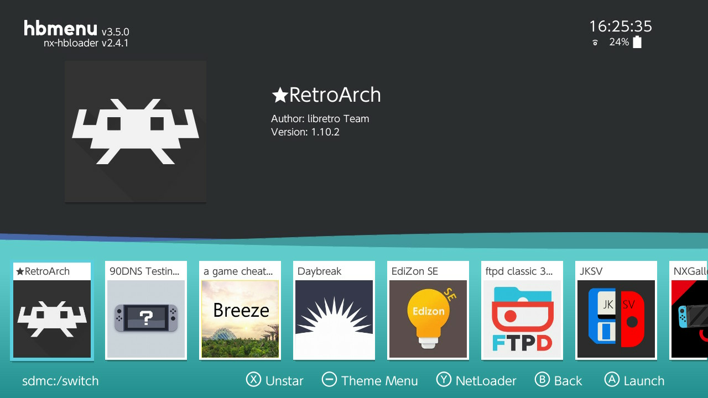
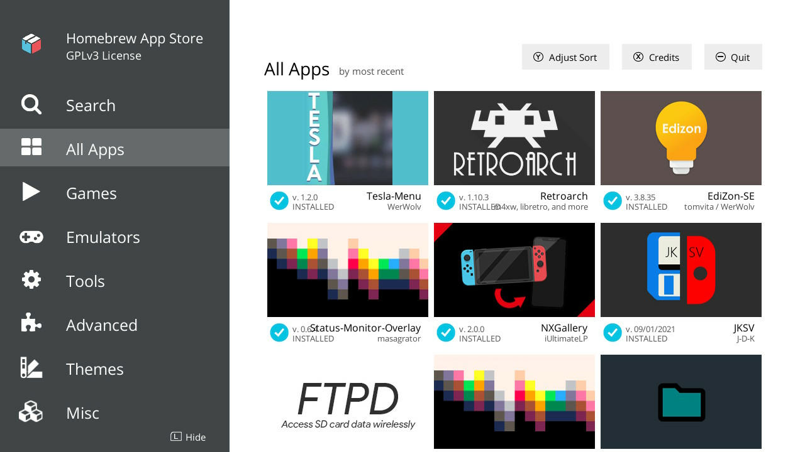

Homebrew(s)
This section will cover various useful applications that you can run in the CFW. Some homebrews will have their own pages.
How to Access Homebrews
In Atmosphère, you have two ways to access homebrew applications, depending on your use-case.
Applet Mode (Through Album)
The first and most-often-used method is through the Album. To access it, simply try to open the album. You will be then faced with an image like this:

From here, you can run any homebrew you see on the list (see below for basic). Newly installed ones should appear in this list. You can also favorite frequently-used applications, if you desire.
Applet Mode
Homebrews run in this mode have limited memory and lifetime, so don't use this method if your applications requires a lot of computing power (like RetroArch).
Title Mode (Through Game)
Title mode allows the homebrew application to get full access to the Switch's resources. Use this mode if the application you are running requires a lot of resources. In order to access this mode:
- Make sure you have a title (game) available to load/play.
- For example, by having a game cartridge in your console, or by having a game installed from the eShop.
- Try to launch the game, but hold the right bumper () while you are doing it.
- This will completely skip the launch of the game you selected, and will hand over control to the Homebrew menu.
- You may find it more reliable to keep holding the bumper until you see the Homebrew menu.
If you succeeded, then you should see something like this (importantly, with no "Applet Mode" text at the top right!):

If the game launches instead, go home (), quit the game, and try again. Make sure you hold the right bumper () before attempting to launch again -- and that you are not letting go of the button until you see the menu.
Title Mode Lifetime
Homebrew applications in this mode effectively run as a "game". This means that it will continue to run even if you go to the homescreen (marked with "Playing"). However, if you put the console to sleep, the application may stop working.
Homebrews
Quitting Some Homebrews
Homebrew applications (especially smaller ones) often have no obvious "quit" button. While you can always go to the home screen to quite applications (album applications will quit immediately), you may be able to press/hold plus or minus ( / ) to quit the application and return to the Homebrew menu.
Homebrew Appstore
This one is pretty self-explanatory. This is an application you can use to get more homebrews without needing to manually download and copy them to the SD card. It also supports updating such applications, which is very convenient.

NX-Shell
This is a file browser for the Switch (mostly SD card). It's not often you need to use this, but for moving/copying/deleting files in a pinch, it's good to have.
FTPd Pro
If you need to transfer single files that are not too large, it may be more convenient to transfer files over the network. Specifically, this is the homebrew ftpd authored by mtheall and TuxSH.
- Make sure you are connected to Wi-Fi
-
Navigate to the Homebrew menu (Album app), and pick
ftpd pro:- You may see two versions of the application,
ftpd pro, andftpd classic. Both will work fine, but the pro version has a friendlier UI.
- You may see two versions of the application,
-
Launch it and take note of the IP address and port it lists at the top:

In this case, the IP is 192.168.1.67 and the port is 5000. -
Use your favorite FTP client (FileZilla, Cyberduck, etc.) to connect to the FTP server.
- By default, the server allows anonymous connections, meaning that you do not have to specify a user and password combination. You can change this behaviour using the menu accessed via the
ybutton (), while inftpd pro.
- By default, the server allows anonymous connections, meaning that you do not have to specify a user and password combination. You can change this behaviour using the menu accessed via the
-
Transfer the files you need
- You should see a lot of activity on the Switch when transferring. This is normal.
-
Exit the FTP server from the Switch
- This can either be done by navigating away (Press Home (), etc.) or by pressing the Plus or Minus key ( / ).
Server Lifetime
Note that the server will only stay up as long as you have this applet open. Pressing Home () or navigating away by any means will kill the server. If you need the freedom of navigating away, consider launching it in title mode.
EdiZon
EdiZon SE is a save management and cheat loading tool (among other things). We will use it to manage cheats on applicable Switch games. We will also be using an overlay extension to make enabling cheats in-game much more convenient. More details in the section about cheats.
RetroArch
RetroArch is an all-in-one front-end emulator for many consoles. You'll learn about how to install cores, games, apply cheats, etc. in the section about RetroArch.